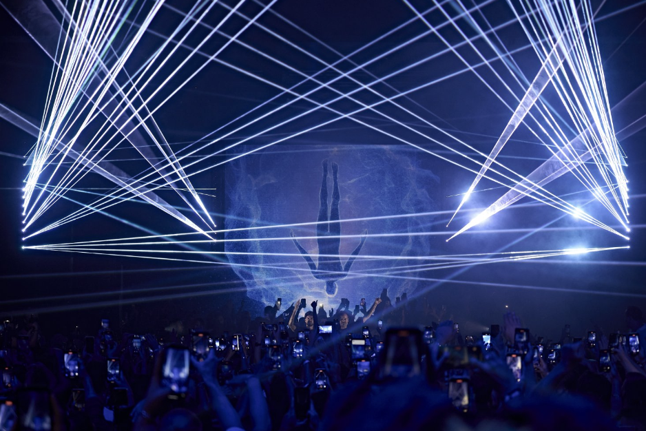
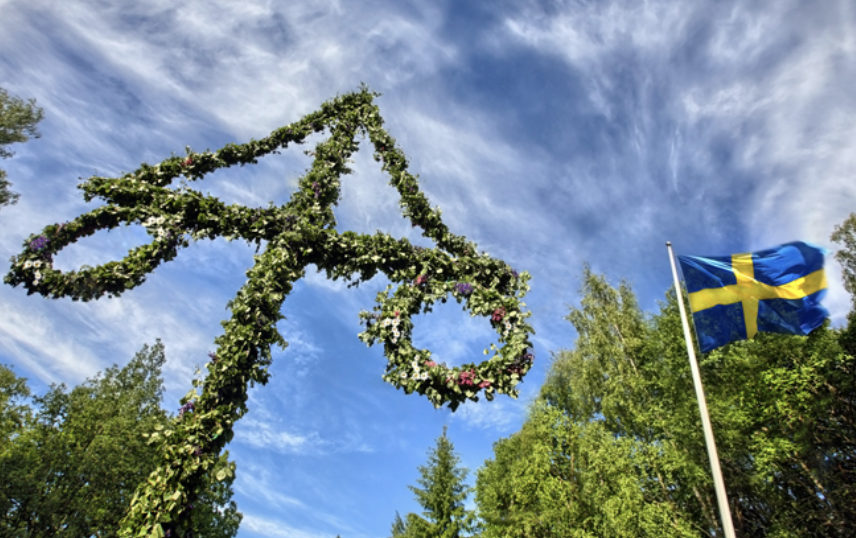

Nyheter!
Se senaste nyheterna i världen av bastu. Har du ämnen du vill diskutera? Hör av dig!
Techno Aufguss på Midsommar
19 Juni 2024
Av: Victor Lundin
Midsommar
Aufguss
Techno

Förbered dig på en oförglömlig upplevelse när midsommarnatten förvandlas till en fest för alla sinnen med vår unika Techno Aufguss-session. Detta speciella evenemang kommer att erbjuda en energifylld atmosfär där technomusik, kraftfulla ljudanläggningar och en spektakulär ljusshow skapar en magisk stämning i bastun.
Techno Aufguss-sessionen kommer att vara fullspäckad med ånga och intensiva handduksrörelser, allt till rytmen av hypnotiska technobeats. Den kraftfulla ljudanläggningen kommer att få golvet att vibrera och ljusshowen, med sina färgsprakande effekter, kommer att förvandla bastun till en riktig festarena. Det blir en upplevelse som stimulerar både kropp och sinne, perfekt för att fira midsommar på ett annorlunda och minnesvärt sätt.
Utöver den innovativa Techno Aufguss-sessionen, kommer vi också att erbjuda traditionella Aufguss-sessioner för de som föredrar en mer klassisk bastuupplevelse. Dessa sessioner kommer att ledas av våra erfarna Aufgussmeister som använder eteriska oljor för att skapa en lugnande och hälsosam miljö. Varje traditionell session avslutas med en lugnande och svalkande paus för optimal återhämtning.
Vi är också glada att meddela att H. Dernehl, den hyllade Aufgussmeistern, kommer att gästspela under midsommarevenemanget. Efter fjolårets succé har många av våra medlemmar önskat hans återkomst, och vi är stolta över att kunna uppfylla denna begäran. H. Dernehl är känd för sina kreativa och intensiva Aufguss-ritualer som alltid lämnar deltagarna i ett tillstånd av djup avslappning och eufori.
Som en extra bonus kommer vi att erbjuda en specialutgåva av vår signatur-smoothie efter varje session. Denna smoothie, gjord på färska bär och naturliga ingredienser, är perfekt för att återställa energinivåerna och ge en uppfriskande avslutning på din bastuupplevelse.
Oavsett om du är en trogen bastuälskare eller nyfiken nybörjare, så är vår Techno Aufguss på midsommar något du inte vill missa. Kom och upplev en kväll fylld av ånga, musik och magi!
Nu närmar det sig...
19 Juni 2024
Av: Webmaster
Midsommar
Bastu
Hälsa

Kom och fira midsommar med oss på ett avkopplande och hälsosamt sätt med våra speciella bastusessioner! Under hela dagen och framförallt på kvällen, kommer vi att erbjuda en rad olika bastuupplevelser som passar alla smaker och behov.
Våra bastusessioner är utformade för att ge maximal avkoppling och välmående. Oavsett om du föredrar en lugn och traditionell session eller något mer energifyllt, har vi något för dig. Våra erfarna Aufgussmeister kommer att leda sessionerna med precision och omsorg, och använda eteriska oljor för att förhöja upplevelsen och ge en mängd hälsofördelar.
Lite kul fakta om bastu!
- Bastu har använts i över 2000 år och har sitt ursprung i Finland.
- Regelbunden bastubadning kan bidra till att förbättra hjärt- och kärlhälsan.
- En bastusession kan hjälpa till att eliminera toxiner genom svettning.
- Bastu kan hjälpa till att lindra muskelvärk och stelhet.
- Att växla mellan varm bastu och kall dusch kan stärka immunförsvaret.
Vi är också stolta över att ha H. Dernehl, den hyllade Aufgussmeistern, som kommer att gästa våra midsommarevenemang. Hans unika och intensiva Aufguss-ritualer är kända för att lämna deltagarna i ett tillstånd av djup avslappning och eufori. Hans närvaro är efterfrågad av många av våra medlemmar, särskilt efter förra årets succé.
Efter varje bastusession kommer vi att erbjuda vår signatur-smoothie, en perfekt blandning av färska bär och naturliga ingredienser, för att återställa energinivåerna och ge en uppfriskande avslutning på din bastuupplevelse.
Oavsett om du är en trogen bastuälskare eller nyfiken nybörjare, så är våra bastusessioner på midsommar något du inte vill missa. Kom och upplev en dag och kväll fylld av ånga, avkoppling och välmående!